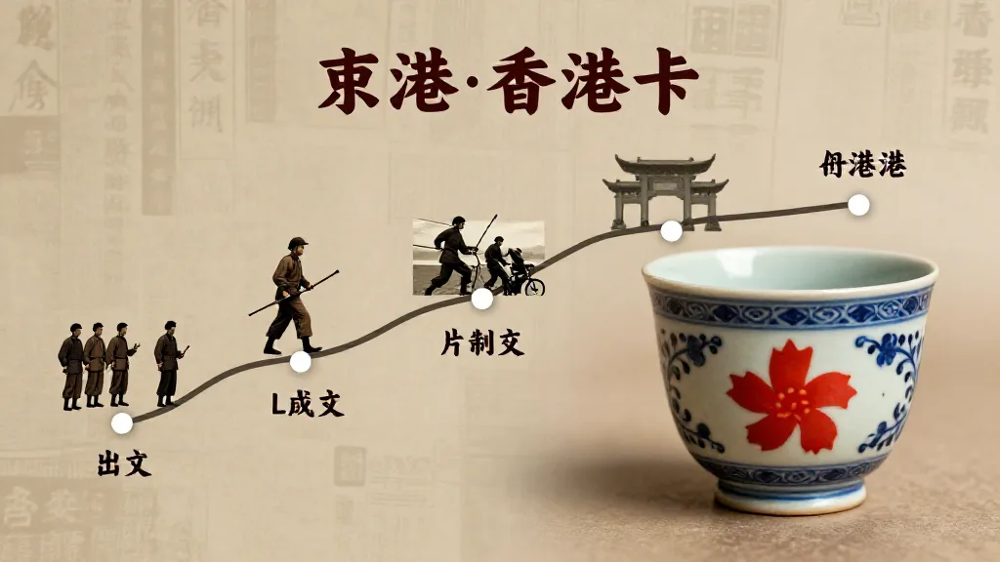
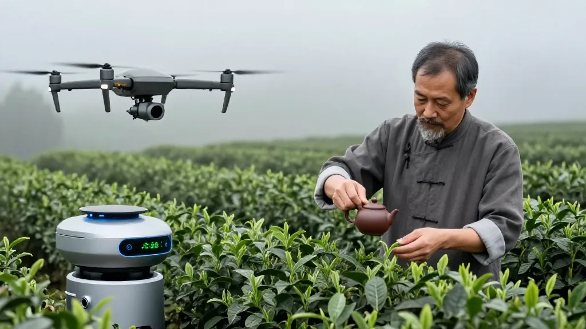
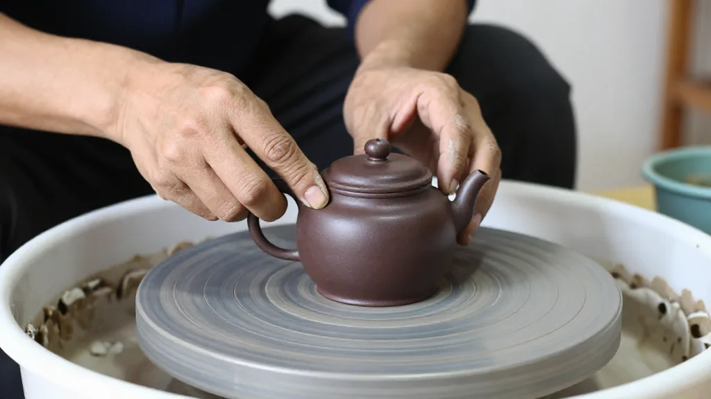

2026年9月15日，香港。今日见到一张相——暗色石枱上摆住一个紫砂壶同一只100到200年嘅日本古杯，茶汤金黄，旁边有个布袋和尚雕像。
呢只杯嘅年纪，可能比我嘅祖父仲大。我哋70后习惯快速迭代、效率优先，但呢只古杯颠覆咗呢种思维。
一、紫砂壶同日本古杯——东西方嘅时间价值
相入面有两个时间见证者。紫砂壶系宜兴传统工艺，好壶要养3到10年先出包浆。日本古杯系江户后期到明治时代，1826到1926年之间。
呢只杯见证过鸦片战争、明治维新、甲午战争、一战、新文化运动、抗战、日本重建、香港回归，一直到AI时代。一百年前嘅人，从冇谂过呢只杯会喺2026年香港，俾一个70后用嚟反思AI，呢个就系时间嘅奇妙。

圖片由 AI輔助創作（Z-Image-Turbo）
二、布袋和尚——笑住面对人生嘅智慧
布袋和尚笑到见牙唔见眼，大肚能容容天下难容之事，开口便笑笑世间可笑之人。别人笑佢癫佢笑笑口，畀气受当冇事，见人跌低扶起身。
喺AI高速发展嘅今日，我哋特别需要呢种笑住面对嘅智慧：唔好畀外境搞乱自己嘅心。
圖片由 AI輔助創作（Z-Image-Turbo）
三、紫砂壶嘅慢同AI嘅快
养壶要时间：一个月有茶香，一年温润，三年包浆初成，十年如玉。AI呢，一个月迭代一次，一年革新几次，三年重塑行业，十年连行业定义都变。一边越慢越有价值，一边越快越被淘汰。我哋70后正喺两种时间哲学交界：习惯慢工出细货，但面对快速迭代，点平衡？
四、2026年嘅中国茶产业
中国8月出口增长25%，国际茶日成全球活动，AI、无人机、机器人采摘进入茶产业。传统派讲越陈越香、手工温度、时间价值；AI派讲效率、标准化、数据溯源。未来唔系传统对AI，而系传统乘AI。唔识传统唔识文化核心，唔识AI做唔到全球市场。

圖片由 AI輔助創作（Z-Image-Turbo）
五、手工教我哋嘅事
2026年Anthropic警告有人用AI研发武器，技术唔一定系好事。手工嘅价值唔系慢，系有温度。手拉胚师傅嘅指纹力度心境注入壶入面，机器复制唔到。AI时代最珍贵系有温度嘅创作：手写信胜过百封AI邮件，手绘图胜过百张AI图，用心文章胜过百篇AI内容。

圖片由 AI輔助創作（Z-Image-Turbo）
六、70后点样喺AI时代养自己？
紫砂壶靠养先有价值，人靠咩？第一养深度，做到行业最深处，AI生成唔到十年洞察。第二养关系，客户朋友系AI替代唔到嘅，连接系人类核心能力。第三养手艺，写作谈判判断，AI辅助唔能替代。第四养心态，布袋和尚咁笑住面对，唔好被焦虑绑架。
新壶系初入AI嘅人，茶汤浸润系每日学习，包浆系独特风格，壶内茶垢系失败经验。一把养过嘅壶传几代人，一个养过嘅人影响几代人。
七、古杯前嘅反思
中国壶泡中国茶，倒入日本古杯，呢个就系文化对话。100到200年前嘅杯，2026年仲用紧。AI产品有几个撑到2200年？紫砂工艺传几千年，古杯设计传几百年，AI模型寿命可能得几年。乜先系真正价值？快速迭代嘅便利，定穿越时间嘅传承？答案系能穿越时间嘅嘢先系价值。
三句话：时间系最好过滤器，撑过百年先系经典；传承比创新更难，百年前嘅杯仲有人用就系力量；慢嘅嘢最有快嘅价值，古杯紫砂手工艺喺AI时代反而最值钱。
2026年见证AI高速但被警告滥用，出口增长但限制流动，茶结合AI但手工无可替代。矛盾就系快对慢、AI对手工、效率对温度。我哋答案系两者都要：用AI效率做有温度嘅嘢，用紫砂嘅慢养有深度嘅人生。